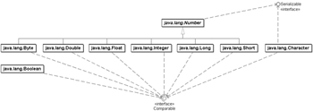
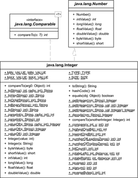
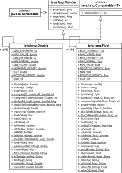
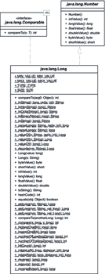
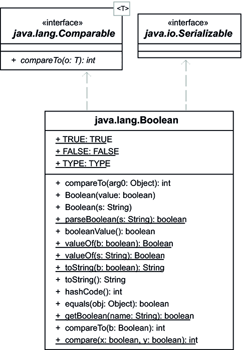
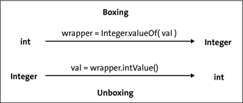

8.2 Wrapper-Klassen und Autoboxing
Die Klassenbibliothek bietet für jeden primitiven Datentyp wie int, double, char spezielle Klassen an. Diese sogenannten Wrapper-Klassen (auch Ummantelungsklassen, Mantelklassen oder Envelope Classes genannt) erfüllen drei wichtige Aufgaben:
- Wrapper-Klassen bieten statische Hilfsmethoden zur Konvertierung eines primitiven Datentyps in einen String (Formatierung) und vom String zurück in einen primitiven Datentyp (Parsen).
- Die Datenstrukturen wie Listen und Mengen, die in Java Verwendung finden, können nur Referenzen aufnehmen. So stellt sich das Problem, wie primitive Datentypen diesen Containern hinzugefügt werden können. Wrapper-Objekte kapseln einen einfachen primitiven Wert in einem Objekt, sodass eine Referenz existiert, die etwa in einer vorgefertigten Datenstruktur gespeichert werden kann.
- Der Wrapper-Typ ist wichtig bei Generics. Wenn etwa ein spezieller Comparator zwei Fließkommazahlen vergleichen soll, ist eine Comparator-Implementierung mit Comparator<double> nicht korrekt, es muss Comparator<Double> heißen. Primitive Datentypen gibt es auch bei Generics nicht, es kommen immer die Wrapper-Typen zum Einsatz.
Es existieren Wrapper-Klassen zu allen primitiven Datentypen.
| Wrapper-Klasse | Primitiver Typ |
| Byte | byte |
| Short | short |
| Integer | int |
| Long | long |
| Double | double |
| Float | float |
| Boolean | boolean |
| Character | char |
| Hinweis |
|
Für void, das kein Datentyp ist, existiert die Klasse Void. Sie deklariert nur die Konstante TYPE vom Typ Class<Void> und ist für Reflection (das Auslesen von Eigenschaften einer Klasse) interessanter. |
In diesem Abschnitt wollen wir uns zunächst um das Erzeugen von Wrapper-Objekten kümmern, dann um Methoden, die in allen Wrapper-Klassen vorkommen, und schließlich die individuellen Methoden der einzelnen Wrapper-Klassen vorstellen. Der Klasse Character haben wir uns schon zu Beginn von Kapitel 4, »Der Umgang mit Zeichenketten«, gewidmet, als es um Zeichen und Zeichenketten ging.
Abbildung 8.2: Vererbungsbeziehung der Wrapper-Klassen (Boolean ist ebenfalls Serializable)
8.2.1 Wrapper-Objekte erzeugen
Wrapper-Objekte lassen sich auf drei Arten aufbauen:
- über statische valueOf()-Methoden, denen ein primitiver Ausdruck oder ein String übergeben wird
- über Boxing: Aus einem primitiven Wert erzeugt der Compiler automatisch valueOf()-Methodenaufrufe, die das Wrapper-Objekt liefern.
- über Konstruktoren der Wrapper-Klassen
| Beispiel |
|
Erzeuge einige Wrapper-Objekte: Integer int1 = Integer.valueOf( "30" ); // valueOf() |
Nun gibt es also drei Möglichkeiten, an Wrapper-Objekte zu kommen. Ganz selbstverständlich stellt sich die Frage, ob es eine bevorzugte Variante gibt. Boxing ist vom Schreibaufwand her gesehen die kürzeste und im Allgemeinen die beste, weil kompakteste Variante. (Boxing ist allerdings nicht ganz unproblematisch, wie der Abschnitt »Mehr Probleme als Lösungen durch Autoboxing? *« zeigt.) Da Boxing auf die valueOf()-Methoden zugreift, sind die beiden Varianten semantisch identisch und unterscheiden sich nur im Programmcode, aber nicht im Bytecode. Uns bleibt daher die Lösung »Konstruktor versus valueOf()«. Eine statische Methode zum Erzeugen von Objekten einzusetzen ist clever, da anders als ein Konstruktor eine statische Methode Objekte nicht immer neu erzeugen muss, sondern auch auf vorkonstruierte Objekte zurückgreifen kann. Und das ist genau das, was valueOf() bei den drei Klassen Byte, Short, Integer und Long macht: Stammen die Ganzzahlen aus dem Wertebereich –128 bis +127, so greift valueOf() auf vorbereitete Objekte aus einem Cache zurück. Das Ganze klappt natürlich nur, weil Aufrufer von valueOf() ein unveränderliches (engl. immutable) Objekt bekommen – ein Wrapper-Objekt kann nach dem Aufbau nicht verändert werden.
Wrapper-Objekte sind immutable
Ist ein Wrapper-Objekt erst einmal erzeugt, lässt sich der im Wrapper-Objekt gespeicherte Wert nachträglich nicht mehr verändern. Um dies auch wirklich sicherzustellen, sind die konkreten Wrapper-Klassen allesamt final. Die Wrapper-Klassen sind nur als Ummantelung und nicht als vollständiger Datentyp gedacht. Da sich der Wert nicht mehr ändern lässt (er ist ja immutable), heißen Objekte mit dieser Eigenschaft auch Werte-Objekte. Wollen wir den Inhalt eines Integer-Objekts io zum Beispiel um eins erhöhen, so müssen wir ein neues Objekt aufbauen:
int i = 12;
Integer io = Integer.valueOf( i );
io = Integer.valueOf( io.intValue() + 1 );
i = io.intValue();
Die Variable io referenziert nun ein zweites Integer-Objekt, und der Wert vom ersten io-Objekt mit 12 bleibt unangetastet.
8.2.2 Konvertierungen in eine String-Repräsentation
Alle Wrapper-Klassen bieten statische toString(value)-Methoden zur Konvertierung des primitiven Elements in einen String an:
Listing 8.6: com/tutego/insel/wrapper/WrapperToString.java, main()
String s1 = Integer.toString( 1234567891 ),
s2 = Long.toString( 123456789123L ),
s3 = Float.toString( 12.345678912f ),
s4 = Double.toString( 12.345678912 ),
s5 = Boolean.toString( true );
System.out.println( s1 ); // 1234567891
System.out.println( s2 ); // 123456789123
System.out.println( s3 ); // 12.345679
System.out.println( s4 ); // 12.345678912
System.out.println( s5 ); // true
| Tipp |
|
Ein Java-Idiom[159](Es ist wiederum ein JavaScript-Idiom, mit dem Ausdruck s – 0 aus einem String eine Zahl zu machen, wenn denn die Variable s eine String-Repräsentation einer Zahl ist.) zur Konvertierung ist auch folgende Anweisung: String s = "" + number; |
Der String erscheint immer in der englisch geschriebenen Variante. So steht bei den Dezimalzahlen ein Punkt statt des uns vertrauten Kommas.
| Hinweis |
|
Bei der Darstellung von Zahlen ist eine landestypische (länderspezifische) Formatierung sinnvoll. Das kann printf() leisten: System.out.printf( "%f", 1000000. ); // 1000000,000000 |
toString() als Objekt- und Klassenmethode
Liegt ein Wrapper-Objekt vor, so liefert die Objektmethode toString() die String-Repräsentation des Wertes, den das Wrapper-Objekt speichert. Dass es gleichlautende statische Methoden toString() und eine Objektmethode toString() gibt, sollte uns nicht verwirren; während die Klassenmethode den Arbeitswert zur Konvertierung aus dem Argument zieht, nutzt die Objektmethode den gespeicherten Wert im Wrapper-Objekt.
Anweisungen, die ausschließlich zum Konvertieren über das Wrapper-Objekt gehen, wie new Integer(v).toString(), lassen sich problemlos umschreiben in Integer.toString(v). Zudem bietet sich auch die überladene statische Methode String.valueOf(v) an, die – eben weil sie überladen ist – für alle möglichen Datentypen deklariert ist (doch nutzt valueOf(v) intern auch nur WrapperKlasse.toString(v)).
8.2.3 Die Basisklasse Number für numerische Wrapper-Objekte
Alle numerischen Wrapper-Klassen können den gespeicherten Wert in einem beliebigen anderen numerischen Typ liefern. Die Methodennamen setzen sich – wie zum Beispiel doubleValue() und intValue() – aus dem Namen des gewünschten Typs und Value zusammen. Technisch gesehen überschreiben die Wrapper-Klassen Byte, Short, Integer, Long, Float und Double aus einer Klasse Number[160](Zusätzlich erweitern BigDecimal und BigInteger die Klasse Number und haben damit ebenfalls die xxx- Value()-Methoden. In Java 5 kamen AtomicInteger und AtomicLong hinzu, die aber nicht immutable sind wie die anderen Klassen.) die xxxValue()-Methoden[161](Nur die Methoden byteValue() und shortValue() sind nicht abstrakt und müssen nicht überschrieben werden. Diese Methoden rufen intValue() auf und konvertieren den Wert über eine Typanpassung auf byte und short.).
abstract class java.lang.Number |
- byte byteValue()
Liefert den Wert der Zahl als byte. - abstract double doubleValue()
Liefert den Wert der Zahl als double. - abstract float floatValue()
Liefert den Wert der Zahl als float. - abstract int intValue()
Liefert den Wert der Zahl als int. - abstract long longValue()
Liefert den Wert der Zahl als long. - short shortValue()
Liefert den Wert der Zahl als short.
Abbildung 8.3: UML-Diagramm für Number
| Hinweis |
|
Wenn die Operandentypen beim Bedingungsoperator unterschiedlich sind, gibt es ganz automatisch eine Anpassung: boolean b = true; |
|
Der Ergebnistyp ist double, sodass die Ganzzahl 1 als 1.0, also als Fließkommazahl, ausgegeben wird. Die gleiche Anpassung nimmt der Compiler bei Wrapper-Typen vor, die er unboxt und konvertiert: Integer i = 1; Number n1 = b ? i : d; Number n2 = b ? (Number) i : d; // oder Number n2 = b ? i : (Number) d; |
8.2.4 Vergleiche durchführen mit compare(), compareTo(), equals()
Haben wir zwei Ganzzahlen 1 und 2 vor uns, so ist es trivial zu sagen, dass 1 kleiner als 2 ist. Bei Fließkommazahlen ist das ein wenig komplizierter, da es hier »Sonderzahlen« wie Unendlich oder eine negative beziehungsweise positive 0 gibt. Da insbesondere Vergleichsalgorithmen die Beantwortung der Frage, ob zwei Werte a und b kleiner, größer oder gleich sind, erwarten, gibt es zwei Typen von Methoden in den Wrapper-Klassen:
- Sie implementieren eine Objektmethode compareTo(). Die Methode ist nicht zufällig in der Klasse, denn Wrapper-Klassen implementieren die Schnittstelle Comparable (wir haben die Schnittstelle schon am Anfang des Kapitels kurz vorgestellt).
- Wrapper-Klassen besitzen statische compare(x,y)-Methoden.
Die Rückgabe der Methoden ist ein int, und es kodiert, ob ein Wert größer, kleiner oder gleich ist.
| Beispiel |
|
Teste verschiedene Werte: System.out.println( Integer.compare(1, 2) ); // –1 |
Tabelle 8.2 fasst die Methoden der Wrapper-Klassen zusammen.
| Klasse | Methode aus Comparable | Statische Methode compare() |
| Byte | int compareTo(Byte anotherByte) | int compare(int x, int y) |
| Short | int compareTo(Short anotherShort) | int compare(short x, short y) |
| Float | int compareTo(Float anotherFloat) | int compare(float f1, float f2) |
| Double | int compareTo(Double anotherDouble) | int compare(double d1, double d2) |
| Integer | int compareTo(Integer anotherInteger) | int compare(int x, int y) |
| Long | int compareTo(Long anotherLong) | int compare(long x, long y) |
| Character | int compareTo(Character anotherChar) | int compare(char x, char y) |
| Boolean | int compareTo(Boolean b) | int compare(boolean x, boolean y) |
Die Implementierung einer statischen Methode WrapperKlasse.compare() ist äquivalent zu WrapperKlasse.valueOf(x).compareTo(WrapperKlasse.valueOf(y)).
| Hinweis |
|
Nur die genannten Wrapper-Klassen besitzen eine statische compare()-Methode. Es ist kein allgemeingültiges Muster, dass, wenn eine Klasse Number erweitert und Comparable implementiert, sie dann auch eine statische compare()-Methode hat. So erweitern zum Beispiel die Klassen BigInteger und BigDecimal die Oberklasse Number und implementieren Comparable, aber eine statische compare()-Methode bieten sie trotzdem nicht. |
Gleichheitstest über equals()
Alle Wrapper-Klassen überschreiben aus der Basisklasse Object die Methode equals(). So lässt sich testen, ob zwei Wrapper-Objekte den gleichen Wert haben, auch wenn die Wrapper-Objekte nicht identisch sind.
| Beispiel |
|
Die Ergebnisse einiger Gleichheitstests: Boolean.TRUE.equals( Boolean.TRUE ) true |
Die Objektmethode equals() der Wrapper-Klassen ist auch eine kurze Alternative zu wrapperObject.compareTo(anotherWrapperObjekt) == 0.
| Ausblick |
|
Dass die Wrapper-Klassen equals() implementieren, ist gut, denn so können Wrapper-Objekte problemlos in Datenstrukturen wie einer ArrayList untergebracht und wieder gefunden werden. Und dass Wrapper-Objekte auch Comparable sind, ist ebenfalls prima für Datenstrukturen wie TreeSet, die – ohne extern gegebene Comparator-Klassen für Vergleiche – eine natürliche Ordnung der Elemente erwarten. |
8.2.5 Die Klasse Integer
Die Klasse Integer kapselt den Wert einer Ganzzahl vom Typ int in einem Objekt und bietet Konstanten statische Methoden zur Konvertierung in einen String und zurück sowie weitere Hilfsmethoden mathematischer Natur an.
Um aus dem String eine Zahl zu machen, nutzen wir Integer.parseInt(String).
Abbildung 8.4: Klassendiagramm von Integer
| Beispiel |
|
Konvertiere die Ganzzahl 38.317, die als String vorliegt, in eine Ganzzahl: String number = "38317"; |
Die statische Methode Integer.parseInt(String) konvertiert einen String in int, und die Umkehrmethode Integer.toString(int) liefert einen String. Weitere Varianten mit unterschiedlicher Basis wurden schon in Abschnitt 4.5, »Konvertieren zwischen Primitiven und Strings«, vorgestellt.
final class java.lang.Integer |
- static int parseInt(String s)
Erzeugt aus der Zeichenkette die entsprechende Zahl. Die Basis ist 10. - static int parseInt(String s, int radix)
Erzeugt die Zahl mit der gegebenen Basis. - static String toString(int i)
Konvertiert die Ganzzahl in einen String und liefert sie zurück.
parseInt() erlaubt keine länderspezifischen Tausendertrennzeichen, etwa in Deutschland den Punkt oder im angelsächsischen Raum das Komma.
8.2.6 Die Klassen Double und Float für Fließkommazahlen
Die Klassen Double und Float haben wie die anderen Wrapper-Klassen eine Doppelfunktionalität. Sie kapseln zum einen eine Fließkommazahl als Objekt und bieten zum anderen statische Utility-Methoden. Wir kommen in Kapitel 18, »Bits und Bytes und Mathematisches«, noch genauer auf die mathebezogenen Objekt- und Klassenmethoden zurück.
Abbildung 8.5: UML-Diagramm der Fließkommaklassen
8.2.7 Die Long-Klasse
Integer und Long sind im Prinzip API-gleich, nur ist der kleinere Datentyp int durch long ersetzt.
Abbildung 8.6: Klassendiagramm von Long
8.2.8 Die Boolean-Klasse
Die Klasse Boolean kapselt den Datentyp boolean. Sie deklariert als Konstanten zwei Boolean-Objekte: TRUE und FALSE.
Abbildung 8.7: Klassendiagramm von Boolean
final class java.lang.Boolean |
- static final Boolean FALSE
- static final Boolean TRUE
Konstanten für Wahrheitswerte. - Boolean(boolean value)
Erzeugt ein neues Boolean-Objekt. Dieser Konstruktor sollte nicht verwendet werden, stattdessen sollten Boolean.TRUE oder Boolean.FALSE eingesetzt werden. Boolean-Objekte sind immutable, und ein new Boolean(value) ist unnötig. - Boolean(String s)
Parst den String und liefert ein neues Boolean-Objekt zurück. - static Boolean valueOf(String s)
Parst den String und gibt die Wrapper-Typen Boolean.TRUE oder Boolean.FALSE zurück. Die statische Methode hat gegenüber dem Konstruktor Boolean(boolean) den Vorteil, dass sie immer das gleiche immutable Wahr- oder Falsch-Objekt (Boolean.TRUE oder Boolean.FALSE) zurückgibt, anstatt neue Objekte zu erzeugen. Daher ist es selten nötig, den Konstruktor aufzurufen und immer neue Boolean-Objekte aufzubauen. - public static boolean parseBoolean(String s)
Parst den String und liefert entweder true oder false.
Der Konstruktor Boolean(String name) beziehungsweise die beiden statischen Methoden valueOf(String name) und parseBoolean(String name) nehmen Strings entgegen und führen im JDK den Test name != null && name.equalsIgnoreCase("true") durch. Das heißt zum einen, dass die Groß-/Kleinschreibung unwichtig ist, und zum anderen, dass Dinge wie » false « (mit Leerzeichen), »falsch« oder »Ostereier« automatisch false ergeben, wobei »TRUE« oder »True« dann true liefert.
| Tipp |
|
Würde jeder Entwickler ausschließlich die Konstanten Boolean.TRUE und Boolean.FALSE nutzen, so wären bei lediglich zwei Objekten Vergleiche mit == beziehungsweise != in Ordnung. Da es aber einen Konstruktor für Boolean-Objekte gibt – und es ist durchaus diskussionswürdig, warum es überhaupt Konstruktoren für Wrapper-Klassen gibt –, ist die sicherste Variante ein boolean1.equals(boolean2). Wir können eben nicht wissen, ob eine Bibliotheksmethode wie Boolean isNice() auf die zwei Konstanten zurückgreift oder immer wieder neue Boolean-Objekte aufbaut. |
8.2.9 Autoboxing: Boxing und Unboxing
Neu seit Java 5 ist das Autoboxing. Dies bedeutet, dass primitive Datentypen und Wrapper-Objekte bei Bedarf ineinander umgewandelt werden. Ein Beispiel:
int i = 4711;
Integer j = i; // steht für j = Integer.valueOf(i) (1)
int k = j; // steht für k = j.intValue() (2)
Die Anweisung in (1) nennt sich Boxing und erstellt automatisch ein Wrapper-Objekt, sofern erforderlich. Schreibweise (2) ist das Unboxing und steht für das Beziehen des Elements aus dem Wrapper-Objekt. Das bedeutet: Überall dort, wo der Compiler ein primitives Element erwartet, aber ein Wrapper-Objekt vorhanden ist, entnimmt er den Wert mit einer passenden xxxValue()-Methode aus dem Wrapper.
Abbildung 8.8: Autoboxing von int/Integer
Die Operatoren ++, -- *
Der Compiler konvertiert nach festen Regeln, und auch die Operatoren ++, -- sind erlaubt:
Integer i = 12;
i = i + 1; // (1)
i++; // (2)
System.out.println( i ); // 14
Wichtig ist, dass weder (1) noch (2) das Original-Integer-Objekt mit der 12 ändern (alle Wrapper-Objekte sind immutable), sondern i nur andere Integer-Objekte für 13 und 14 referenziert.
Boxing für dynamische Datenstrukturen (Ausblick)
Am angenehmsten ist die Schreibweise dann, wenn etwa in Datenstrukturen primitive Elemente abgelegt werden sollen:
List list = new ArrayList();
list.add( Math.sin(Math.PI / 4) );
Allerdings warnt der Compiler hier; er wünscht sich eine typisierte Liste, also:
List<Double> list = new ArrayList<Double>();
Leider ist es so, dass der Typ der Liste tatsächlich mit dem Wrapper-Typ Double festgelegt werden muss und nicht mit dem Primitivtyp double. Aber vielleicht ändert sich das ja noch irgendwann.
Keine Konvertierung der null-Referenz zu 0
Beim Unboxing führt der Compiler beziehungsweise die Laufzeitumgebung keine Konvertierung von null auf 0 durch. Mit anderen Worten: Bei der folgenden versuchten Zuweisung gibt es keinen Compilerfehler, aber zur Laufzeit eine NullPointerException:
int n = (Integer) null; //java.lang.NullPointerException zur Laufzeit
| Hinweis |
|
In switch-Blöcken sind int, Aufzählungen und Strings als Typen erlaubt. Bei Ganzzahlen führt der Compiler automatisch Konvertierungen und Unboxing auf int durch. Beim Unboxing gibt es aber die Gefahr einer NullPointerException: Integer integer = null; |
Autoboxing bei Feldern?
Da primitive Datentypen und Wrapper-Objekte durch Autoboxing automatisch konvertiert werden, fällt im Alltag der Unterschied nicht so auf. Bei Feldern ist der Unterschied jedoch augenfällig, und hier kann Java keine automatische Konvertierung durchführen. Denn auch, wenn zum Beispiel char und Character automatisch ineinander umgewandelt werden, so sind Arrays nicht konvertierbar. Eine Feldinitialisierung der Art
Character[] chars = { 'S', 'h', 'a' };
enthält zwar rechts dreimal Boxing von char in Character, und eine automatische Umwandlung auf der Ebene der Elemente ist gültig, sodass
char first = chars[ 0 ];
natürlich gilt, aber die Feld-Objekte lassen sich nicht ineinander überführen. Folgendes ist nicht korrekt:
char[] sha = chars; //
Die Typen char[] und Character[] sind also zwei völlig unterschiedliche Typen, und eine Überführung ist nicht möglich (von den Problemen mit null-Referenzen einmal ganz abgesehen). So muss in der Praxis zwischen den unterschiedlichen Typen konvertiert werden, und bedauerlicherweise bietet die Java-Standardbibliothek hierfür keine Methoden. Die Lücke füllt etwa die Open-Source-Bibliothek Apache Commons Lang (http://commons.apache.org/lang/) mit der Klasse ArrayUtils, die mit toObject() und toPrimitive() die Konvertierungen durchführt.
Mehr Probleme als Lösungen durch Autoboxing? *
Mit dem Autoboxing ist eine Reihe von Unregelmäßigkeiten verbunden, die der Programmierer beachten muss, um Fehler zu vermeiden. Eine Unregelmäßigkeit hängt mit dem Unboxing zusammen, das der Compiler immer dann vornimmt, wenn ein Ausdruck einen primitiven Wert erwartet. Wenn kein primitives Element erwartet wird, wird auch kein Unboxing vorgenommen:
Listing 8.7: com/tutego/insel/wrapper/Autoboxing.java, main() Teil 1
Integer i1 = new Integer( 1 );
Integer i2 = new Integer( 1 );
System.out.println( i1 >= i2 ); // true
System.out.println( i1 <= i2 ); // true
System.out.println( i1 == i2 ); // false
Der Vergleich mit == ist weiterhin ein Referenzvergleich, und es findet kein Unboxing auf primitive Werte statt, sodass es auf einen Vergleich von primitiven Werten hinausliefe. Daher muss bei zwei unterschiedlichen Integer-Objekten dieser Vergleich immer falsch sein. Das ist natürlich problematisch, da die alte mathematische Regel »aus i <= j und i >= j folgt automatisch i == j« nicht mehr gilt. Wenn es die unterschiedlichen Integer-Objekte für gleiche Werte nicht gäbe, bestünde dieses Problem nicht.
Es ist interessant zu wissen, was nun genau passiert, wenn das Boxing eine Zahl in ein Wrapper-Objekt umwandelt. In dem Moment wird nicht der Konstruktor aufgerufen, sondern die statische valueOf()-Methode:
Listing 8.8: com/tutego/insel/wrapper/Autoboxing.java, main() Teil 2
Integer n1 = new Integer( 10 );
Integer n2 = Integer.valueOf( 10 );
Integer n3 = 10;
Integer n4 = 10;
System.out.println( n1 == n2 ); // false
System.out.println( n2 == n3 ); // true
System.out.println( n1 == n3 ); // false
System.out.println( n3 == n4 ); // true
Die Widersprüche hören aber damit nicht auf. Das JDK versucht das Problem mit dem == damit zu lösen, dass über Boxing gebildete Integer-Objekte einem Pool entstammen. Da jedoch nicht beliebig viele Wrapper-Objekte aus einem Pool kommen können, gilt die Gleichheit der über Boxing gebildeten Objekte nur in einem ausgewählten Wertebereich zwischen –128 und +127, also dem Wertebereich eines Bytes:
Listing 8.9: com/tutego/insel/wrapper/Autoboxing.java, main() Teil 3
Integer j1 = 2;
Integer j2 = 2;
System.out.println( j1 == j2 ); // true
Integer k1 = 127;
Integer k2 = 127;
System.out.println( k1 == k2 ); // true
Integer l1 = 128;
Integer l2 = 128;
System.out.println( l1 == l2 ); // false
Integer m1 = 1000;
Integer m2 = 1000;
System.out.println( m1 == m2 ); // false
Wir betonten bereits, dass auch bei Wrapper-Objekten der Vergleich mit == immer ein Referenz-Vergleich ist. Da 2 und 127 im Wertebereich zwischen –128 und +127 liegen, entstammen die entsprechenden Integer-Objekte dem Pool. Das gilt für 128 und 1.000 nicht; sie sind immer neue Objekte. Damit ergibt auch der ==-Vergleich false.
| Abschlussfrage |
|
Welche Ausgabe kommt auf den Bildschirm? Ändert sich etwas, wenn i und j auf 222 stehen? Integer i = 1, j = 1; |
Ihr Kommentar
Wie hat Ihnen das <openbook> gefallen? Wir freuen uns immer über Ihre freundlichen und kritischen Rückmeldungen.
 Jetzt bestellen
Jetzt bestellen


{kind=link}
{kind=link}
{kind=link}
{kind=link}
{kind=link}
{kind=link}
{kind=link}